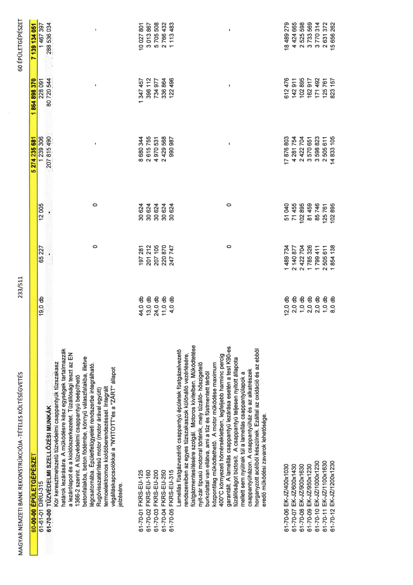

| Tétel | Menny. | Egys. | Anyag e.ár (net HUF) | Díj e.ár (net HUF) | Anyag összesen (net HUF) | Díj összesen (net HUF) | Anyag+Díj összesen (net HUF) |
|---|---|---|---|---|---|---|---|
| 61-61-01 DIRU-315 | 19,0 | db | 65 227 | 12 005 | 1 239 306 | 228 091 | 1 467 397 |
| 61-70-00 TŰZVÉDELMI SZELLŐZÉSI MUNKÁK | 0 | 0 | 0 | 0 | 207 815 490 | 80 720 544 | 288 536 034 |
| Kör keresztmetszetű tűzvédelmi csappantyúk tűzszakasz határok lezárására. A működésre kész egységek tartalmazzák a lezárólapot és a kioldószerkezetet. Tűzállósági teszt az EN 1366-2 szerint. A tűzvédelmi csappantyú beépíthető betonfalakba, beton födémbe, könnyű válaszfalakba, illetve légcsatornába. Épületfelügyeleti rendszerbe integrálható. Rugóvisszatérítésű motor (motor árával együtt) termoelektromos kioldóberendezéssel. Integrált végálláskapcsolókkal a "NYITOTT" és a "ZÁRT" állapot jelzésére. | 0 | 0 | 0 | 0 | 0 | 0 | 0 |
| 61-70-01 FKRS-EU-125 | 44,0 | db | 197 281 | 30 624 | 8 680 344 | 1 347 457 | 10 027 801 |
| 61-70-02 FKRS-EU-160 | 13,0 | db | 201 212 | 30 624 | 2 615 755 | 398 112 | 3 013 867 |
| 61-70-03 FKRS-EU-200 | 24,0 | db | 207 105 | 30 624 | 4 970 531 | 734 977 | 5 705 508 |
| 61-70-04 FKRS-EU-250 | 11,0 | db | 220 870 | 30 624 | 2 429 568 | 336 864 | 2 766 432 |
| 61-70-05 FKRS-EU-315 | 4,0 | db | 247 747 | 30 624 | 990 987 | 122 496 | 1 113 483 |
| Lamellás füstgázvezérlő csappantyú épületek füstgázelvezető rendszereiben az egyes tűzszakaszok különálló vezérlésére, füstgázmentesítésére szolgál. Motoros kivitelben. Működtetése nyit-zár típusú motorral történik, mely tűzálló- hőszigetelő burkolattal van ellátva, ami a tűz és füstmentett térből központilag működtethető. A motor működése maximum 400°C környezeti hőmérsékletben, legfeljebb harminc percig garantált. A lamellás csappantyú lezárása esetén a test K90-es tűzállóságot biztosít. A csappantyú teljesen nyitott állapota mellett sem nyúlnak túl a lamellás csappantyúlapok a csappantyúházon. A csappantyúház és az alkatrészek horganyzott acélból készülnek. Ezáltal az oxidáció és az ebből eredő működési zavarok lehetősége. | 0 | 0 | 0 | 0 | 0 | 0 | 0 |
| 61-70-06 EK-JZ/400x1030 | 12,0 | db | 1 489 734 | 51 040 | 17 876 803 | 612 476 | 18 489 279 |
| 61-70-07 EK-JZ/600x1430 | 2,0 | db | 2 140 877 | 71 455 | 4 281 754 | 142 911 | 4 424 665 |
| 61-70-08 EK-JZ/900x1630 | 1,0 | db | 2 422 704 | 102 895 | 2 422 704 | 102 895 | 2 525 598 |
| 61-70-09 EK-JZ/950x1230 | 2,0 | db | 1 785 326 | 81 459 | 3 570 651 | 162 917 | 3 733 569 |
| 61-70-10 EK-JZ/1000x1230 | 2,0 | db | 1 799 411 | 85 746 | 3 598 823 | 171 492 | 3 770 314 |
| 61-70-11 EK-JZ/1100x1630 | 1,0 | db | 2 505 611 | 125 761 | 2 505 611 | 125 761 | 2 631 372 |
| 61-70-12 EK-JZ/1200x1230 | 8,0 | db | 1 854 138 | 102 895 | 14 833 105 | 823 157 | 15 656 262 |
